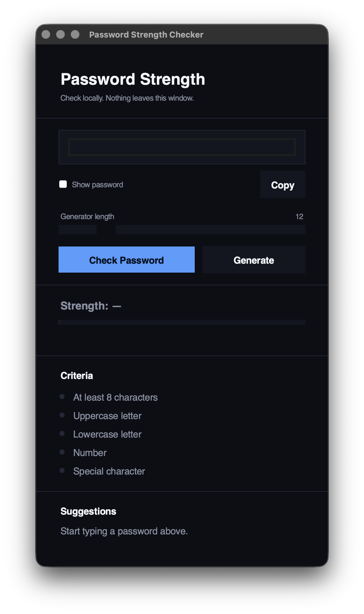
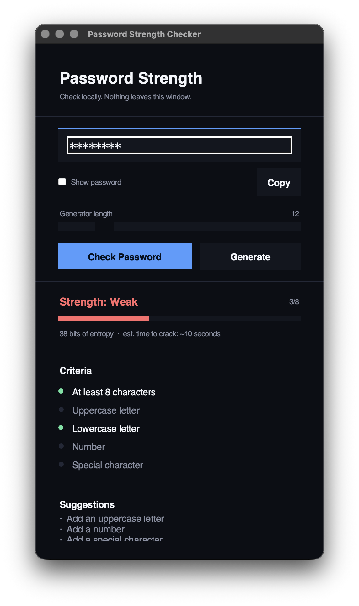
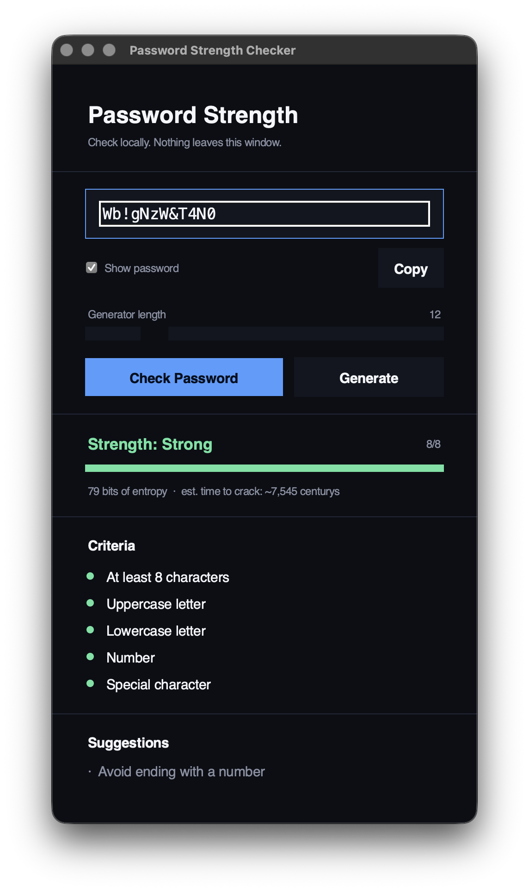

People frequently use simple passwords like birthdays or common words or reuse the same password across multiple platforms to make them easy to remember.
Most users don't know whether their passwords can withstand automated hacking tools or hacking attacks.
Relying on online, web‑based password tools can make users hesitant due to privacy concerns over sending sensitive data across the internet.
Weak passwords leave personal data, local files, and online accounts vulnerable to cyberattacks.
Users need a safe, offline capable environment to test and create passwords without transmitting sensitive strings over web servers.
Runs locally on the user's computer, ensuring passwords aren't transmitted over the web during testing or generation.
Gives clear feedback on password strength directly on the desktop.
Creates random, cryptographically secure passwords instantly without leaving the desktop environment.
Desktop GUI application · built in Python with Tkinter · runs locally · no internet required.
Visual, real‑time feedback on how strong the current password is.
Breaks a password down and shows exactly which criteria are met.
Toggle visibility of the entered password on demand.
Produces a random, complex password with a single click.
Confirms length, uppercase, lowercase, numbers, and symbols.
Actionable tips to strengthen a weak or borderline password.
Core language powering the application's logic and analysis engine.
Python's standard GUI toolkit used to build every window, frame, and widget.
Custom font handling used to keep the interface's typography consistent.
Primary development environment used to write, test, and debug the project.
Version control and source hosting for tracking the project's progress.

Home Screen
Password Analysis
ResultsA short recording of the application running password entry, live scoring, and secure password generation.
demo.mp4 next to this file, or set the video's src attribute — it will appear here automatically.Open the Python Tkinter application for demonstration.